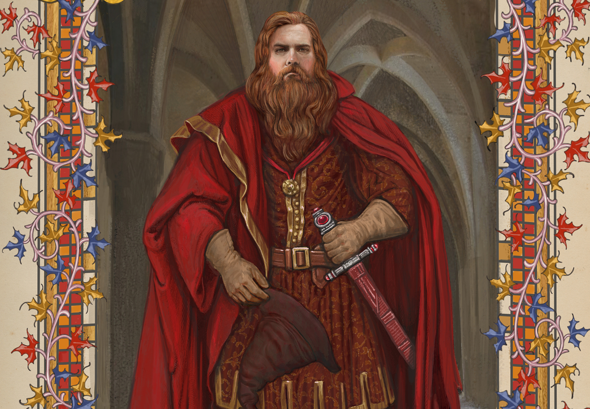
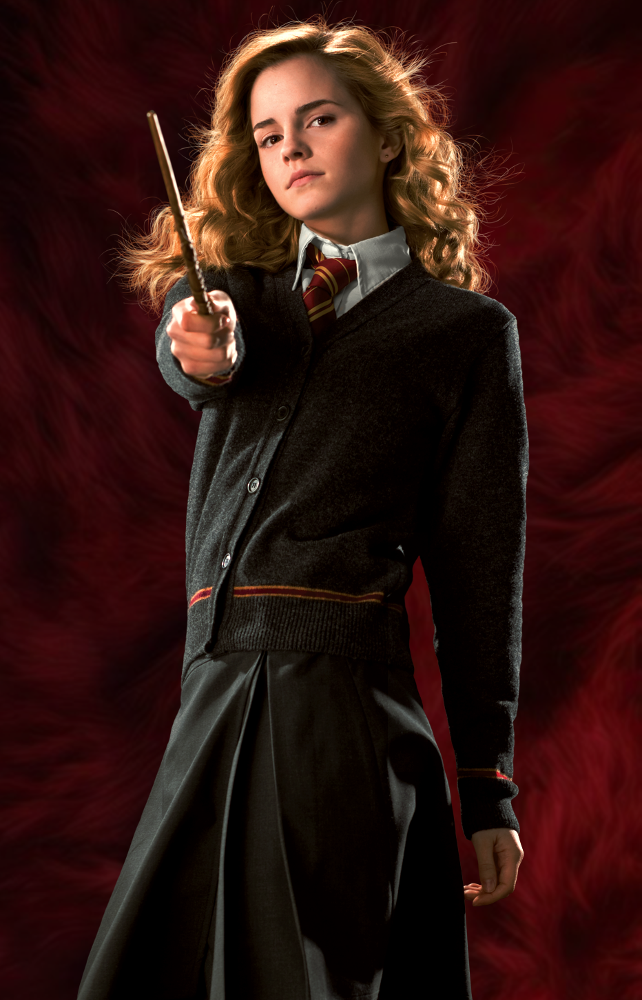
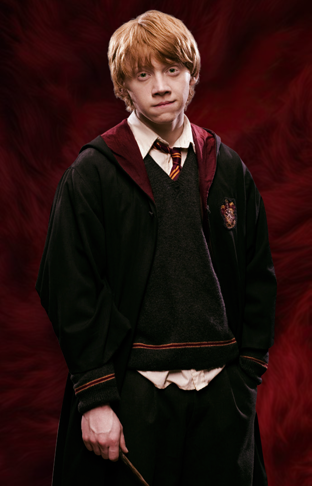
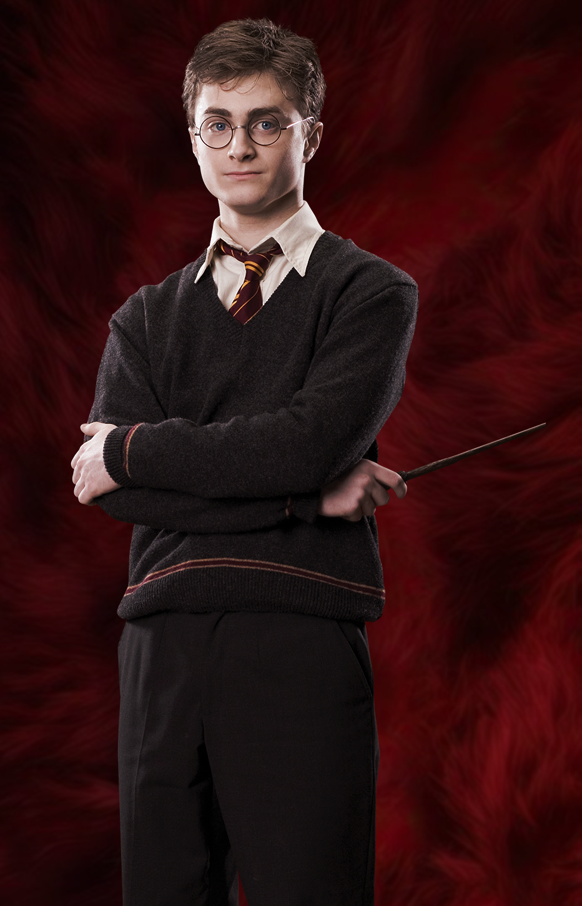

"You might belong in Gryffindor, Where dwell the brave at heart, Their daring, nerve, and chivalry Set Gryffindors apart"
— Sorting Hat
Gryffindor is one of the four Houses of Hogwarts School of Witchcraft and Wizardry and is founded by Godric Gryffindor. Gryffindor instructs the Sorting Hat to choose students possessing the traits he values most, such as courage, chivalry, nerve, and determination, to be sorted into his house.
The emblematic animal is a lion, and its colors are scarlet and gold, with its house point hourglass filled with rubies. Sir Nicholas de Mimsy-Porpington, also known as "Nearly Headless Nick," is the House ghost.
Gryffindor corresponds roughly to the element of fire, and it is for this reason that the colors scarlet and gold are chosen to represent the house. The color of fire also corresponds to that of a lion, with scarlet representing the mane and tail, and gold representing the coat.

Godric Gryffindor (early 993) was an English wizard and one of the four founders of Hogwarts School of Witchcraft and Wizardry. He was great friends with Salazar Slytherin, but opposed him when he later thought that they should not accept Muggle-born students at Hogwarts. It is unknown when he died. In his honour, Gryffindor's birthplace became known as Godric's Hollow.


